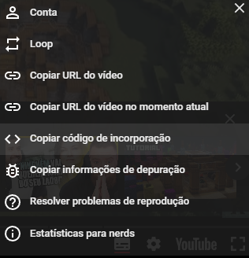

Neste teste tentarei fazer uma tag para fazer um video rodar no meu site html
O video não rodou, ficou estatico como uma imagem
Para resolver isso, eu preciso adicionar um controle para o video
Adicionando o controle, o video rodou, mas ainda não está do jeito que eu quero
Para resolver isso, eu preciso adicionar um tamanho para o video
Adicionando o tamanho, o video ficou do jeito que eu queria
Agora eu vou adicionar um poster para o video
Adicionando o poster, o video ficou do jeito que eu queria
Agora eu vou adicionar um loop para o video
Adicionando o loop, o video ficou do jeito que eu queria
Agora eu vou adicionar um autoplay para o video
Oque faz o autoplay no video?
autoplay é um atributo booleano que indica que o vídeo deve começar a ser reproduzido automaticamente quando a página é carregada
Se o atributo estiver presente, o vídeo será reproduzido automaticamente
Porém, neste video, mesmo após a pagina ser carregada ele não inicia sozinho, qual o motivo disso?
Provavelmente o motivo é que o navegador não permite o autoplay de videos, para resolver isso, eu preciso adicionar um atributo muted
Adicionando o muted o video começou a dá autoplay, mas o que o muted faz?
O atributo muted é um atributo booleano que indica que o vídeo deve ser reproduzido sem som
Se o atributo estiver presente, o vídeo será reproduzido sem som
Porém, mesmo iniciando sem som, ele ainda pode ter o audio controlado?
Sim, o audio pode ser controlado, basta clicar no botão de som do video
Porém, mesmo com o audio controlado, o video ainda não está do jeito que eu quero
Para resolver isso, eu preciso adicionar um preload para o video
Oque faz o preload no video?
preload é um atributo booleano que indica que o vídeo deve ser carregado quando a página é carregada
Se o atributo estiver presente, o vídeo será carregado quando a página é carregada
Mas meu amigo, isso não vai deixar a pagina mais pesada?
Sim, vai deixar a pagina mais pesada, por isso, eu devo usar o preload com cuidado, mas vamos lá!
Todos os codigos criados aqui foram com a ajuda do copilot, muitissimo obrigado amigo!
Porém, mesmo com o preload, o video ainda não está do jeito que eu quero
Para resolver isso, eu preciso adicionar um playsinline para o video
Oque faz o playsinline no video?
playsinline é um atributo booleano que indica que o vídeo deve ser reproduzido no próprio elemento
Se o atributo estiver presente, o vídeo será reproduzido no próprio elemento
Aí eu pergunto, oque significa ele ser reproduzido no proprio elemento?
Significa que o video será reproduzido no proprio elemento, sem abrir uma nova janela ou aba
Mas geralmente os videos não são reproduzidos em outro elemento, entao por qual motivo eu adiciono isso?
Provavelmente o motivo é que o navegador não permite o video ser reproduzido no proprio elemento, para resolver isso, eu preciso adicionar um atributo playsinline
No final o codigo ficou grande, porém tranquilo de entender.
O código ficou assim:
<video src="Videos/2025-03-04 08-24-45.mp4" controls width="640" height="360" poster="Fotos/954420.jpg" loop autoplay muted preload playsinline> <Uma live minha /video>
Agora eu vou tentar fazer um video com um link para o youtube
O video não rodou, provavelmente o motivo é que o link do youtube não é um video, é um site
Para resolver isso, eu preciso adicionar um link para o video
No caso, o proprio youtube tem um codigo especifico nos seus videos, chamado de "codigo de incorporação" então é só copiá-lo, e colá-lo aqui
E é isto, este é o meu projeto proprio 2, videos adicionados com sucesso. 🤓